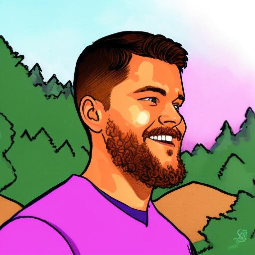

Tyler Burnett
Currently transforming health challenges into innovative solutions. I develop event-driven systems for health monitoring, and craft scalable architectures that enhance wellness initiatives. Nutrition innovator, health tech enthusiast, and collaborative team member. Trustworthy and committed to delivering impactful results. 🚀